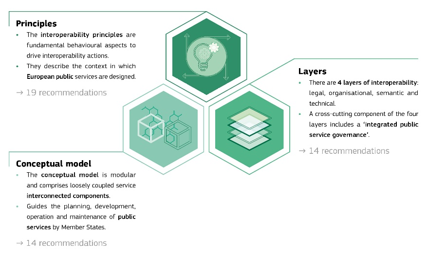
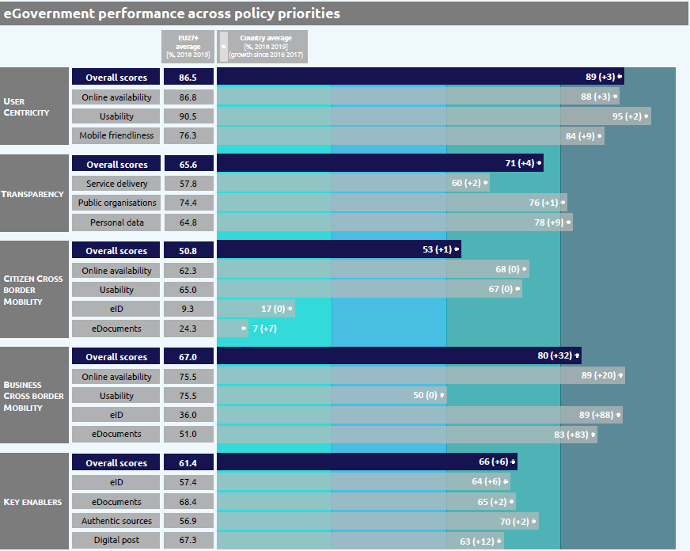

ISA2
ISA2
Digital Public Administration factsheet 2020
Belgium
ISA2
ISA2
2 Digital Public Administration Highlights 9
3 Digital Public Administration Political Communications 11
4 Digital Public Administration Legislation 20
5 Digital Public Administration Governance 26
6 Digital Public Administration Infrastructure 36
7 Cross border Digital Public Administration Services for Citizens and Businesses 46
Country
Profile
1
Population: 11 455 519 inhabitants (2019)
GDP at market prices: EUR 473 085 million (2019)
GDP per inhabitant in PPS (Purchasing Power Standard EU 27=100): 117 (2019)
GDP growth rate: 1.4% (2019)
Inflation rate: 1.2% (2019)
Unemployment rate: 5.4% (2019)
General government gross debt (Percentage of GDP): 98.6% (2019)
General government deficit/surplus (Percentage of GDP): -1.9% (2019)
Area: 30 688 km2
Capital city: Brussels
Official EU language: Dutch, French and German
Currency: Euro
Source: Eurostat (last update: 26 June 2020)
The following graphs present data for the latest Generic Information Society Indicators for Belgium compared to the EU average. Statistical indicators in this section reflect those of Eurostat at the time the Edition is being prepared.
Percentage of individuals using the internet for interacting with public authorities in Belgium | Percentage of individuals using the internet for obtaining information from public authorities in Belgium |
Percentage of individuals using the Internet for downloading official forms from public authorities in Belgium | Percentage of individuals using the Internet for sending filled forms to public authorities in Belgium |
| |
In 2017, the European Commission published the European Interoperability Framework (EIF) to give specific guidance on how to set up interoperable digital public services through a set of 47 recommendations. The picture below represents the three pillars of the EIF around which the EIF Monitoring Mechanism was built to evaluate the level of implementation of the EIF within the Member States. It is based on a set of 68 Key Performance Indicators (KPIs) clustered within the three main pillars of the EIF (Principles, Layers and Conceptual model), outlined below.

Source: European Interoperability Framework Monitoring Mechanism 2019
For each of the three pillars, a different scoreboard was created to breakdown the results into their main components (i.e. the 12 principles of interoperability, the interoperability layers and the components of the conceptual model). The components are evaluated on a scale from one to four, where one means a lower level of implementation, while 4 means a higher level of implementation. The graph below shows the result of the first EIF Monitoring Mechanism data collection for Belgium in 2019. It is possible to notice an overall good performance of the country, with particularly positive results within the third scoreboard (Interoperability principles). The areas of improvements are distributed in all scoreboards and are related to the principle of external information sources and services, legal interoperability and multilingualism. Not enough data was collected to measure the principle of preservation of information.
Source: European Interoperability Framework Monitoring Mechanism 2019
The graph below is the result of the latest eGovernment Benchmark report, which evaluates the priority areas of the eGovernment Action Plan 2016-2020, based on specific indicators. These indicators are clustered within four main top-level benchmarks:
The 2020 report presents the biennial results, achieved over the past two years of measurement of all eight life events used to measure the above-mentioned top-level benchmarks. More specifically, these life events are divided between six ‘Citizen life events’ (Losing and finding a job, Studying, Family life, all measured in 2012, 2014, 2016 and 2018, and Starting a small claim procedure, Moving, Owning a car, all measured in 2013, 2015, 2017 and 2019) and two ‘Business life events’ (Business start-up, measured in 2012, 2014, 2016 and 2018, and Regular business operations, measured in 2013, 2015, 2017 and 2019).

Source: eGovernment Benchmark Report 2020 Country Factsheets
Digital Public Administration Highlights
2
Digital Public Administration Political Communications
On 28 January 2019, the Conférence interministérielle Santé publique (CIP SP) approved the eHealth Action Plan for 2019-2021. By approving this plan, the eight ministers that participated to the CIP SP reinforced their commitment to the digital transformation of the Belgian healthcare system.
During the second half of 2019, the Belgian government developed a communication campaign on social media to promote the private partners in the eBox ecosystem.
On 12 December 2019, the Belgian Data Protection Authority (DPA) released its Strategic Plan for the period 2019-2025. In the Plan, the Belgian DPA describes its vision for the years to come, defining its priorities and strategic objectives and listing the necessary means to achieve its objectives
Digital Public Administration Legislation
The eBox Law of 28 February 2019 introduced eBox, an electronic mailbox that can be used by public actors for electronic communications with Belgian citizens and registered companies and organisations. The Royal Decree of 2 June 2019 stipulated the conditions for private service providers to be accredited to make available the eBox to citizens.
Digital Public Administration Governance
No new changes in digital government governance were reported.
Digital Public Administration Infrastructure
In 2019, eInvoice has been launched by BOSA to guide users through the concept of electronic invoicing, its future applications and what it means for Belgium. The website uses the PEPPOL model of eInvoicing to support both B2G and the B2B eInvoicing.
Digital Public Administration Political Communications
3
Digital Belgium (2015 - present)
On 20 April 2015, the action plan Digital Belgium was introduced by Deputy Prime Minister and Minister of Digital Agenda and Telecom, Alexander De Croo, together with the Digital Minds for Belgium (a group of approximately 20 leading digital-world professionals) with the key objective to promote growth and create jobs through digital innovation. The programme set three goals, to be achieved by 2020, namely turning Belgium into one of Europe’s top three digital economies, generating 1 000 new start-ups, and creating 50 000 jobs for the national economy.
Digital Belgium outlined the government’s long-term digital vision for the country, which was then translated into specific policy goals. Belgium identified five major priorities that contained three to six priority projects each in the areas of:
A number of new initiatives were introduced. The Start-up Plan, for example, was a concrete first step to encourage young and beginner entrepreneurs to set up new businesses in innovative sectors via initiatives such as tax shelters for start-ups and fiscal incentives for crowdfunding. Another initiative aimed at rolling out eInvoicing for suppliers. Further initiatives are to be launched, such as the National Alliance for Digital Skills and Jobs, a plan for a high-speed internet roll-out, the Digital Health Valley, the Digital Act (a series of legislative proposals enabling, among other things, the use of electronic signatures and digital archiving, in order to replace paper-based solutions), the deployment of the federal cloud, a mobile authentication for eGovernment applications, a multi-directional digital communication platform and an open data strategy.
Federal eGovernment Strategy (2009 - present)
The Federal eGovernment strategy for the social sector aims to create a single virtual public administration while respecting the privacy of users, as well as the specificities and competences of all government bodies and administrative layers.
Its main objective is to improve the delivery of public services for citizens and businesses by rendering it faster, more convenient, less constraining and more open.
The current strategy is outlined as follows:
To meet the above-mentioned objectives, the Belgian eGovernment strategy was based in the past on four main strategic streams:
This first stream focused on user needs, life events and simplification of all administrative procedures.
The second stream was based on two documents. The first one, the eGovernment cooperation agreement, was signed in March 2001 by the federal, regional and local authorities. It laid down a cooperation framework according to which all layers of government committed to using the same standards, the same identification infrastructure and the same eSignature. The second one, the cooperation agreement on the principles of a seamless eGovernment, signed in April 2006, set the objective of using those ICTs that provide information to all citizens, businesses and public institutions in a user-friendly way.
The department or agency requiring specific data will be considered most frequently as a trusted source by other administrations that may need such data. Hence, the department or agency in question will be responsible for maintaining a personal data repository.
Communication campaign on eBox
In February 2019, a new law introduced eBox. eBox is an electronic mailbox that can be used by public actors to send electronic communications with Belgian citizens and registered companies and organisations, including registered mail. During the second half of 2019, the Belgian government developed a communication campaign on social media to promote private partners in the eBox ecosystem. These private partners offer to their clients the possibility to consult government documents with their applications. During this campaign, the following partners were promoted: Doccle, bpost bank, Trusto. In December 2019, the government released a communication campaign on national television and radio aimed to raise awareness around eBox.
Digital Wallonia 2019 – 2024
On 6 December 2018, the Walloon government adopted its Digital Wallonia strategy for 2019-2024. The new strategy articulated the framework to set the direction that the region of Wallonia would take in the following five years in order to seize the socio-economic opportunities of the digital transformation. The new strategy was the result of the work of the Digital Wallonia Champions.
This strategy is structured around five major and structuring themes:
Under the new strategy, the rollout of the Digital Wallonia brand will continue, as well as the development of its online platform. During the first year, 19 projects have been implemented as part of the Digital Wallonia strategy.
The Digital Strategy of Wallonia and the Wallonia-Brussels Federation, adopted in December 2015 by the Walloon Government and the French Community, was the predecessor of Digital Wallonia 2019-2024. The strategy marked the Walloon government’s stated ambition to transform Wallonia into a connected and intelligent territory, one where technological companies are recognised leaders at the global level and are a driving force behind the region’s successful industrial transformation. The Digital Strategy of Wallonia is one of the main contributors to the creation of Digital Wallonia.
The strategy includes five main themes for achieving Wallonia’s digital ambition. Each theme is structured into strategic objectives and development axes. It is expected that through their complementarity and interaction, the themes, objectives and axes will foster the digital transformation in Wallonia. There is a total of five themes, nine strategic objectives and 23 priority development axes. The five themes are:
The Walloon government earmarked more than EUR 500 million for the implementation of the strategy over a period of four years.
Plan Marshall 4.0
Plan Marshall 4.0 is the name given to the comprehensive transformation plan designed for the Wallonia Region. The plan includes five high priority areas to strengthen Wallonia’s economy, with the fifth specifically supporting digital innovation. As part of this fifth measure, the Walloon government foresees the development of a modern public administration, Administration 4.0 (see measure V.2 of the plan).
To this end, the Walloon government will:
The Plan Marshall 4.0 also includes a broader Digital Wallonia strategy, fostered by ADN (Agence du Numérique, Walloon Digital Agency).
Administration contract of Wallonia public services
This master plan for public services aims to set up a global, integrated and consistent roadmap with precise goals, proper governance and adequate funding. This is the first time such a master plan has been put together in the Walloon region.
The contract is based on a global user-oriented strategy, with a multi-channel approach.
The plan includes the roll-out of many projects related to digital government, mainly:
More information can be found here.
Administration contract of the Ministry of the Wallonia-Brussels Federation
This master plan for public services is a first-time effort to set up a global, integrated and consistent roadmap with precise goals, proper governance and adequate funding.
Among the main objectives of the plan are:
More information can be found here.
eGovernment Strategy of Flanders
In the Flemish Region, the eGovernment strategy is under the responsibility of the Minister-President of the Flemish government. It is managed by the new Flanders Information Agency, which was created in 2015 by merging the Flemish eGovernment Coordination Cell (CORVE), the Vlaamse Infolijn (the Flemish government call-centre), the Flanders Geographical Information Agency (AGIV) and part of the Department for Administrative Affairs. This new agency is responsible for the new eGovernment programme Vlaanderen Radicaal Digitaal (Radically digital Flanders), which aims at fully digital Flemish government services by 2020. It will also ensure that the once-only data collection principle (known as the MAGDA principle) is acknowledged by the whole Flemish administration. In 2021-2023, a follow-up programme, Vlaanderen Radicaal Digitaal II, will be launched.
The main responsibility of the Flanders Information Agency was to determine the strategic aims and priorities for the transformation of the Flemish government into a data-driven government, while taking part in eGovernment projects in an advisory and supportive role. The agency was also in charge of developing eGovernment-related knowledge and skills, coordinating and providing incentives, and creating a generic eGovernment infrastructure to facilitate cooperation among the different entities within the Flemish administration. This generic eGovernment infrastructure consisted of a number of eGovernment building blocks (electronic identification and trust services, electronic documents, eProcurement, authentic sources, etc.) that could be used as shared systems to improve existing (electronic) service delivery and streamline government operations. The agency provided additional funding for cross-departmental eGovernment projects (Vlaanderen Radicaal Digitaal projects).
A key policy element in this eGovernment policy was the development of authentic sources of information. These are databases that can be used to obtain complete, correct and up-to-date data on businesses, natural persons, addresses, plots, buildings, maps, etc. A comprehensive system of Flemish authentic data sources and related services is still in the process of being built.
The eGovernment strategy 2009-2014 channelled eGovernment efforts into developing integrated solutions, contributing to administrative simplification and increasing government efficiency. The new Flemish eGovernment strategy 2014-2019 aimed to ‘radically digitally’ transform the Flemish administration, by opting for a digital-first approach in the (increasingly mobile) delivery of new (or existing) Flemish government services.
eGovernment Strategy of the Brussels-Capital Region
In May 2014, after the elections, the government unveiled its policy. Highlights included:
Brussels Smart City: make Brussels the digital capital;
BelgIF – Belgium’s National Interoperability Framework
BelgIF is Belgium’s official national interoperability framework, to be followed by all levels of public administration in Belgium.
In line with the revised European Interoperability Framework (EIF), the Belgian federal government and the regions have agreed to use the 12 principles of the EIF as the basis for defining their interoperability.
A number of recommendations are derived from these principles. The 47 recommendations are also endorsed within the context of BelgIF, as a valuable foundation to define the architecture, applications and solutions for data exchange and interoperability within and between the federal government, the communities, and the regions.
The main integrators supporting the implementation of BelgIF are the Flanders Information Agency, the Banque Carrefour d'Échange de Données, the Crossroads Bank for Social Security, Federal Public Service BOSA, eHealth portal, and FIDUS.
The BelgIF website also lists the main building blocks enabling and supporting interoperability in the country: the G Cloud, Federal Service Bus, FedMAN, eBirth, and CSAM.
Digital Transformation Office strategy
Within the newly created Federal Public Service for Policy and Support, the Digital Transformation Office (DTO) implements the Belgian Digital Agenda, which is based on the EU Digital Agenda 2020.
Functions & Services
The Digital Transformation Office’s main functions are:
The Digital Transformation Office’s main services are:
EIRA
In order to support this strategy, the DTO, together with the Belgian regional governments, adopted the EIF as reference for BelgIF. DTO mapped their architecture based on the European Interoperability Reference Architecture (EIRA).
This has allowed the DTO to:
communicate the DTO enterprise architecture in a standardised way;
detect gaps in existing DTO architecture;
make use of the available Solution Architecture Templates to complete the DTO architecture;
compare the DTO architecture with the architecture of other Belgian and EU partners (provided their architecture is also built according to EIRA), and in this way, detect gaps and overlaps between different architectures.
Federal Open Data Strategy (2015 - 2020)
In July 2015, the Deputy Prime Minister and Minister of the Digital Agenda and Telecoms Alexander De Croo announced the adoption of an open data strategy for Belgium aimed at strengthening the digital ecosystem and supporting the evolution towards a leaner, more efficient and modern administration. The most important part of the plan was to create a default setting for all government data, except for information with privacy or security implications.
Charter on Open Data use by local authorities
The Smart Flanders initiative included the Open Data Charter, which established 20 principles, such as open-by default and machine-readable data, enabling local authorities to foster an open data ecosystem.
The Open Data Charter was approved in the summer of 2018 and ratified by 13 Flemish cities. To translate the Charter into practice, a dedicated document was developed with sample clauses to be used in tenders, concessions and contracts in order to make arrangements with suppliers about (Linked) open data. The use of these formulations was recommended, so as to strive for a more joint approach to open data.
No political communication has been adopted in this field to date.
Strategic Plan 2019-2025
On 12 December 2019, the Belgian Data Protection Authority (DPA) released its strategic plan for the period 2019-2025. In the plan, the Belgian DPA described its vision for the years to come, defining its priorities and strategic objectives and listing the necessary means to achieve said objectives.
The Belgian DPA will focus its actions in five sectors:
The Belgian DPA indicated that its actions will focus on the following aspects of Regulation 2016/679/EU:
The societal priorities addressed by the strategic plan are the following:
No political communication has been adopted in this field to date.
No political communication has been adopted in this field to date.
On 28 January 2019, the Conférence interministérielle Santé publique (CIP SP) (Inter-ministerial Conference for Public Health) approved the eHealth Action Plan for 2019-2021. By approving this plan, the eight ministers that participated to the CIP SP reinforced their commitment to the digital transformation of the Belgian healthcare system.
The eHealth Action Plan is based on four main principles:
More information on the eHealth Action Plan for 2019-2021 can be found here.
Flanders’ Action Plan on Artificial Intelligence
The Flemish Minister for Innovation, Philippe Muyters, has announced that he will make EUR 32 million available in the coming years to put Flanders at the forefront for artificial intelligence. The money will be absorbed by the economy through a dedicated Flemish AI action plan, signed in March 2019.
The Flemish AI plan is made up of three major components: research, applications in companies and a supporting policy on education, awareness-raising and ethics.
AI4Belgium
Whilst not a strategy, AI4Belgium is an important project that aims to promote a community-driven AI development across the country. Its goal is enabling Belgian citizens and organisations to seize the opportunities of AI, while responsibly facilitating the ongoing transition. AI4Belgium has the ambition to position Belgium in the European AI landscape. The project has seven general objectives:
G-Cloud Programme
The G-Cloud programme is the result of a joint initiative of several public institutions: federal public services, social security institutions and the care sector. The Cloud Governance Board controls its implementation.
The development of this government-based community cloud is laid out in a joint roadmap. The first-generation G-Cloud services became operative in March 2015 and many improvements are still being implemented.
The G-Cloud is a hybrid cloud service which uses services provided by private companies operating in public cloud environments and services hosted in government data-centres. The G-Cloud is managed by the government. Its expansion and operational functioning largely rely on private sector services.
The G-Cloud services operate in four different domains. The services offer is gradually being extended and improved, based on the actual needs of the participating institutions. Infrastructure-as-a-Service (IAAS), Platform-as-a-Service (PAAS) and Software-as-a-Service (SAAS) are all included. The G-Cloud program will also encompass synergy initiatives undertaken by the government in the field of classic ICT. New services will be added upon availability.
'Hard' infrastructure services ensure that government applications are able to run in a reliable physical environment including data-centre housing, servers and storage. The complete virtual capacity can be flexibly modified in a fully managed IAAS environment. These services are supplemented by a soft infrastructure, which allows for high-quality back-ups, security and identity as well as authorisation management.
PAAS services mainly focus on developing the new software generation, namely cloud-enabled and cloud-native applications using the latest architecture. Generic online applications via Software-as-a-Service for translations, document management, website management and IT service management etc. are a priority.
Digital Public Administration Legislation
4
Governance framework for the digital and information technology policy
On 25 October 2018, the Parliament of the French Community adopted key legislation on the governance framework for the digital and information technology policy. The governance framework is an important piece of legislation, as:
it defines general principles for the digital government transformation;
it establishes a strategic council for digital transformation;
it gives a legal basis to the governance structures;
it establishes a five-year strategic plan for digital and IT development in the French community.
No legislation has been adopted in this field to date.
Law on the right of access to administrative documents
The right of access to documents held by the public sector is guaranteed by Article 32 of the Belgian Constitution and by the law of 11 April 1994. It was amended in 1994 to provide everyone with the right to consult any administrative document and get a copy, except in the cases and conditions stipulated by the laws, decrees or rulings referred to in Articles 39 and 134. Government agencies must respond immediately, or within thirty days in case the request is delayed or rejected.
The 1997 law, related to the publication of information by provinces and municipalities, provided for the same type of transparency obligations for provinces and municipalities. Furthermore, the Flanders Region/Community (lastly amended in 2007), the French Community (lastly amended in 2007) and the Brussels-Capital Region (lastly amended in 2010) have also adopted their own legal acts on the right of access to administrative documents.
Law on the re-use of public sector information
The law of 4 May 2016, adopted at federal level to replace the law of 7 March 2007, transposed into Belgian law the general principles governing the re-use of public sector information in line with the provisions of the EU Directive 2013/37/EU of the European Parliament and of the Council of 26 June 2013 amending Directive 2003/98/EC on the re-use of public sector information
Royal Decree establishing the procedures and time limits for the handling of requests for public sector information re-use
The Royal Decree of 2 June 2019 regulated formal aspects related to the procedure and timelines for handling requests for public sector information re-use. In addition, regional and community governments too were required to transpose the directive on the re-use of public sector information. Flanders, the Brussels-Capital Region and the French and German-speaking Communities also have their own decrees which were inspired from the relevant federal legislation. In 2016, the existing Flemish decree on re-use of public sector information was adapted to be in line with the new European directive.
Law on electronic identification
The Belgian law on electronic identification, dated 18 July 2017, completed the eIDAS Regulation. Under the new law, the following procedures applied:
To enable mobile identification, the Federal Public Service Policy and Support (FPS P&S) drew up the Royal Decree of 22 October 2017. This Royal Decree set out the rules governing the recognition of private electronic identification services, and in particular mobile services. Working with private partners allowed the government to keep costs under control and foster innovation. These external identification services, developed and operated by private sector companies, were added to the CSAM platform devised by the FPS P&S and complemented the already existing set of digital keys.
Legal framework on trusted services
The eIDAS Regulation, Regulation 910/2014/EU on electronic identification and trust services for electronic transactions in the internal market, was completed by several clauses in book XII of the Economy Code.
It is worth mentioning that on a regional level, a law on electronic forms and eID card signature of December 2006, as well as two related decrees of July 2008 were adopted by the Walloon Parliament and the Walloon Government respectively. These decrees gave to electronic forms the same legal value as paper forms.
Moreover, the legal framework for the use of electronic identity cards was set in a series of royal and ministerial decrees, among other: the Law and the Royal Decree of 25 March 2003 on the legal framework for electronic ID cards; the Ministerial Decree on the format of electronic ID cards of 26 March 2003; the Royal Decree on the generalisation of electronic ID cards of 1 September 2004; and the Royal Decree on the eID document for Belgian children under 12 of 18 October 2006.
Law on the use of Electronic Signature in Judicial and Extra-Judicial Proceedings
A law dating 20 October 2000 introduced the use of the electronic signature within judicial and extra-judicial proceedings. It was the first law to address the eSignature issue in Belgium. The law was lastly amended in September 2006.
The Flemish Data Protection Decree
Adopted on 8 June 2018, the Flemish Data protection decree adapted existing Flemish decrees to the new legal rights and obligations introduced by the General Data Protection Regulation (EU) 2016/679.
Law on the protection of private life with regard to the processing of personal data
The General Data Protection Regulation 2016/679/EU was completed by the new act of 3 December 2017 establishing the data protection authority and by the new act of 30 July 2018 on the protection of natural persons with regard to the processing of personal data.
Law on the establishment of a security framework for the information systems having general interest
Adopted on 7 April 2019, the new law transposes at federal level the EU Directive 2016/1148 (NIS Directive). It aims at enhancing the cybersecurity measures put in place by the public and private organisations that provide essential and digital services to the community. The transposing law sets obligations for providers of specific essential services and digital services related to technical and organizational security measures in order to avoid incidents or limit their impact as well as requirements for the development of security policies in accordance with ISO/IEC 27001. The law also foresees reporting obligations in case of incidents, annual audit obligations and the requirement to designate a contact point for reaching competent authorities.
Law on eBox
The law of 15 August 2015 on the incorporation and organisation of a federal service integrator organized the communication and integration of data from different data sources and promoted data single collection, central registration and access.
The eBox law of 28 February 2019 stipulated the provisions concerning eBox, an electronic mailbox that can be used by public actors to exchange electronic communications with Belgian citizens and registered companies and organisations, including registered mail. The Royal Decree of 2 June 2019 stipulated the conditions for private service providers to be accredited to make available the eBox to citizens.
Flemish Public Governance Decree
Adopted on 7 December 2018, the Flemish Public Governance Decree significantly streamlined and simplified the digital government framework. The decree incorporated previously separate decrees on the Steering Committee for Flemish Information and ICT policy, on electronic intergovernmental data exchange and on the re-use of public sector information.
This decree, amongst other topics, dedicated extensive attention to the use of base registries and the adoption of the once-only principle by Flemish as well as local administrations. The decree defined the criteria for the recognition of Flemish base registries and specified how to manage them. It introduced the once only obligation to use base registries in Flemish administrative processes (citizens may refuse to give their data more than once), with the obligation to notify back any errors found in these base registries.
Law on public procurement and several public works contracts, public supply contracts and public service contracts
The law of 17 June 2016, published in the Belgian Monitor of 14 July 2016, was last amended by the law of 7 April 2019.
eInvoicing legislation
In Belgium, the responsible entity for eInvoicing is the Federal Public Service Policy. However, other public services at federal and regional levels may share part of the responsibility.
There is no overall legislation in place for the country as a whole. In Flanders, B2G eInvoicing is mandatory for regional contracting authorities. At federal level, the law of 7 April 2019, published in the Belgian Monitor of 16 April 2019 and transposing Directive 2014/55 into national law, requires contracting authorities to receive and process electronic invoices, following the European standard.
Despite not being mandatory, economic operators are encouraged to submit eInvoices, and central, regional as well as local contracting authorities and entities are encouraged to receive them.
A website has been created by the federal Agency for administrative simplification to guide enterprises, private persons and governments through the concept of electronic invoicing and its future applications.
In 2016, the European Interoperability Framework PEPPOL was implemented in Belgium, with the Directorate-General Digital Transformation of Federal Public Service Policy and Support (FPS P&S) taking up the roll of PEPPOL Authority (PA) for Belgium.
The central gateway between private and public sectors (B2G) is the Mercurius platform, which acts as electronic mailroom for invoices sent to all Belgian public entities. This platform is accompanied by a web portal, which allows public service suppliers who have not yet adopted e-Invoicing to send their electronic invoices in the required structured format. For the receipt of incoming invoices, the Flemish Region has decided to collaborate with the federal level and also to use the Mercurius platform.
At federal level, the Hermes platform will be made available to companies in Belgium. This free tool will allow them to convert electronic XML invoices to PDF format. This should be seen as an incentive to initiate structured exchanges, while waiting for the IT sector to develop the appropriate reception and processing tools and market them in attractive terms.
Law on the acceptance of bids, information to candidates and tenderers, and time limits on public procurement and several public works contracts, public supply contracts and public service contracts
This law of 17 June 2013 was amended several times over the last few years.
It transposed into Belgian law the EU Directives on public procurement, the Directive 2014/25/EU of the European Parliament and of the Council of 26 February 2014 on procurement by entities operating in the water, energy, transport and postal services sectors and repealing Directive 2004/17/EC, Directive 2014/24/EU of the European Parliament and of the Council of 26 February 2014 on public procurement and repealing Directive 2004/18/EC, and Directive 2014/23/EU of the European Parliament and of the Council of 26 February 2014 on the award of concession contracts. They defined the use of electronic tools in public procurement and concession contracts, such as electronic publications of tender opportunities, electronic accessibility of procurement documents, electronic submissions of tenders, acceptance of electronic invoices and electronic means of procurement as having the same legal value as that of traditional means. In addition, they defined new concepts based on public procurement directives, more specifically electronic auctions and the Dynamic Purchasing System.
Decree on primary care
The new decree, which was adopted by the plenary on 3 April 2019, laid down the provisions for the organisation of primary care in Flanders and introduced a digital care and support plan for patients.
No legislation has been adopted in this field to date.
Digital Public Administration Governance
5
Philippe De Backer Minister of Digital Agenda, Postal Services and Telecom, responsible for administrative simplification, the fight against social fraud, privacy and the North Sea. Contact details: Financietoren Kruidtuinlaan 50/155 1000 Brussel Tel.: +32 2528 65 89 E-mail: info@debacker.fed.be |
Directorate-General for Digital Transformation
The Directorate-General for Digital Transformation, which is part of the Federal Public Service Policy & Support, supports the government and federal organizations in their digitization drive. It is the driving force behind the evolution and the digital reforms of the federal government. This DG provides advice and develops projects in connection with the new technologies, paying particular attention to citizens and businesses.
| Ben Smeets Chairman Federal Public Service Policy & Support a.i. Director General DG Digital Transformation Contact details: SPF BOSA WTC III DG Digital Transformation Boulevard Simon Bolivar 30, 1000 Brussels Tel.: + 32 2 740 75 00 E-mail: secretariat.dto@bosa.fgov.be Source: https://dt.bosa.be |
Agency for Administrative Simplification
The Agency for Administrative Simplification is responsible for drafting strategic measures for the simplification of all administrative actions imposed by the State in everyday business exchanges.
Crossroads Bank for Social Security (CBSS)
The Crossroads Bank for Social Security elaborates the eGovernment strategy within the Belgian social sector and coordinates the implementation of the eGovernment projects in this sector.
Frank Robben General Manager of the Crossroads Bank for Social Security (CBSS) Contact details: KSZ-BCSS Chaussée Saint-Pierre 375 1040 Brussels Tel.: + 32 2 741 84 02 E-mail: Management@ksz-bcss.fgov.be Source: http://www.ksz-bcss.fgov.be/ |
DG Digital Transformation (BOSA)
The DG Digital Transformation (BOSA) helps government departments and agencies to elaborate and initiate their eGovernment projects, and coordinates their implementation.
DG Digital Transformation (BOSA)
The DG Digital Transformation (BOSA) is in charge of the implementation of parts of the eGovernment strategy pertaining to several elements of the common infrastructure (e.g. federal portal Belgium.be, FedMAN network, Universal Messaging Engine middleware).
Federal Departments and Agencies
Federal Departments, Ministries and Agencies are responsible for the implementation of individual or joint eGovernment projects falling within their respective areas of competence.
DG Digital Transformation (BOSA)
The DG Digital Transformation (BOSA) provides assistance to all entities in the public sector by supporting their ICT projects.
Agency for Administrative Simplification
Created in December 1998, the Agency for Administrative Simplification assists government departments and bodies in their endeavours to simplify their administrative internal and external procedures. More specifically, it is in charge of simplifying administrative procedures for businesses, especially small and medium-sized enterprises and the self-employed.
Crossroads Bank for Social Security (CBSS)
The CBSS supports the implementation of eGovernment services in the social sector. In particular, it supports integrated services across all public institutions dealing with social security. The CBSS manages Registry bis which contains a database of persons who do not have the Belgian nationality, yet who live in Belgium and are registered with Belgian social security.
BELNET
The government agency BELNET, part of the Federal Science Policy Office, provides secure Internet access with very high bandwidth to end users in education institutions, research centres and public administrations. In addition, BELNET is in charge of operating the federal network FedMAN.
Federal Public Policy and Support (BOSA)
The main body responsible for interoperability activities in Belgium is the Federal Public Service Policy and Support (BOSA).
DG Digital Transformation (BOSA)
DG Digital Transformation includes a committee whose responsibility is to coordinate base registries interconnection. It is an entity that, by law, is charged with the organisation of eGovernment in Belgium, data electronic exchange, as well as the integrated unlocking of data. It has become the most significant actor regarding public sector services, especially after the passing of a law in 2014 that makes it mandatory for public entities to store their authoritative source data. DG Digital Transformation (BOSA) facilitates the dialogue between base registries’ owners, the operational units involved in processing base registry data and the consumers of base registries data. It covers four main tasks:
Ministry of Interior
The Ministry of Interior is tasked with coordinating the National Registry of Natural Persons, which handles the master personal data of natural and legal persons. The National Registry contains data from several registries: the population registry, the foreigner registry and a waiting registry. The municipalities (and the Immigration Office for the last category of the population) are the ones responsible for recording the information. Everyone whose data is maintained in the National Registry has a unique identification code, the national registry number. The once-only principle is applied to the registry. The consultation of data in the National Registry is subject to authorisation from the relevant sectoral committee established within the Commission for the Protection of Privacy, which is competent to grant access to the National Registry information or communication thereof. The National Registry is managed by the Directorate for Institutions and Population, which manages the central database in which all the information related to the population is recorded.
Federal Department of Mobility and Transport
The Federal Department of Mobility and Transport is responsible for the coordination of the Vehicle Registry, which handles master data for vehicles. In cooperation with the Vehicles Registration Directorate, the Department is also responsible for the management of the Crossroad Bank of Vehicles Registry, which handles master data of vehicles. The Vehicle Registry functions under the authority of the (federal) central government, the Vehicles Registration Directorate and the Federal Department for Mobility and Transport. The service has been fully integrated through the WebDIV application that allows insurance companies and car dealers to register cars online. WebDIV is an IT application developed by the Mobility and Transport Federal Public Service enabling insurance companies, agents, brokers and leasing companies to register their clients’ cars online.
Federal Department of Economy
The Federal Department of Economy is responsible for the coordination of the Crossroad Bank for Enterprises Registry, which handles master data for business. Crossroads Bank for Enterprises (CBE) is an authentic source of information that stores all basic data regarding enterprises and their individual business locations. It incorporates data from the former National Registry of legal entities, the former Trade Registry, the VAT Registry, and the social security administration. It is kept up to date by the authorised organisations that input the data. All the existing data from the above-mentioned sources was combined by the Federal Public Service Economy in the CBE, which provides a truly centralised ‘crossroad’ of data on companies.
Federal Department for Social Security
The Federal Department for Social Security is responsible for the coordination of the Crossroad Bank for Social Security (CBSS). The CBSS Registry is complementary and subsidiary to the National Registry. Over the past seventeen years, a major business process re-engineering and computerisation effort has been undertaken by about 3 000 Belgian public and private actors in the social sector from different levels (national, regional and local), under the coordination of the CBSS.
Federal Ministry of Finance’s national property documentation centre
The Centre is responsible for the coordination of the Land Registry, which handles master data for land and parcels.
Court of Audit
The Court of Audit is a body of the Belgian Parliament. It exerts external control on the budgetary, accounting and financial operations of the Federal State, the regions, the communities, the provinces (but not the municipalities), as well as any institution depending on them. It can therefore scrutinise ICT and eGovernment-related projects.
Parliamentary Committees
At federal level, the ICT and eGovernment-related projects are examined by the Committee for General and Home Affairs, the Civil Service of the House of Representatives and the Committee for Home and Administrative affairs of the Senate.
Data Protection Authority
Since 25 May 2018, the Data Protection Authority (DPA) has replaced the Commission for the Protection of Privacy (Privacy Commission). With the Act of 3 December 2017, the DPA became the new Belgian independent supervisory authority in charge of ensuring compliance with the fundamental principles of personal data protection.
Regional and Community Authorities
Political responsibility for eGovernment in the Belgium's regions is held directly by the 'Minister-Presidents' (Prime Ministers) of the three regions: the Flemish Region, the Walloon Region and the Brussels-Capital Region. Within their own areas of competence, the Wallonia-Brussels French Community (WBF), in charge of education and culture policies for the French Community in Belgium, and the German-speaking Community are also working on enabling some of their services. The institutions of the Flemish Community were merged with those of the Flemish Region in 1980.
Steering Committee for Flemish Information and ICT Policy
In 2018, the Steering Committee for the Flemish Information and ICT Policy became fully active as the main governance body for the Flemish information and ICT policy. It adopted a number of important new policies such as a API first strategy for service development and a Public cloud first strategy for service deployment.
| Jan Jambon Minister-President of the Government of Flanders, Flemish Minister for Foreign Policy, Culture, IT and Facilities Contact details: Martelaarsplein 19 1000 Brussels Tel.: +32 2 552 60 00 Fax: +32 2 552 69 01 Email: kabinet.jambon@vlaanderen.be Source: https://www.janjambon.be/ |
Alda Greoli Vice-President, Minister of Culture and Childhood Contact details: Place Surlet de Chokier, 15-17 1000 Bruxelles Tel.: 02-801.79.11 E-mail: alda.greoli@gov.wallonie.be Source: http://greoli.cfwb.be - http://greoli.wallonie.be/home.html |
Bianca Debaets State Secretary of the Brussels-Capital Region, responsible for development cooperation, road safety, regional and community informatics and digital transition, equal opportunities and animal welfare Contact details: Botanic Building Boulevard Saint-Lazare, 10 1210 Brussels Tel.: +32 2 517 13 33 Fax: +32 2 511 50 83 Email: info@debaets.irisnet.be Source: https://www.biancadebaets.be/en |
André Flahaut Minister of the French Community for Budget, Public Service and Administrative Simplification Contact details: Place Surlet de Chokier, 15-17 1000 Brussels Tel.: + 32 2 801 75 11 Fax: +32 2 801 75 17 Email: immanuella.pereira@gov.cfwb.be Source: http://flahaut.cfwb.be/ |
Oliver Paasch Minister-President; Minister of the German-speaking Community (Ministerpräsident der deutschsprachigen Gemeinschaft Belgiens) Contact details: Oliver Paasch Ministre-Président Gospert Str. 1 4700 Eupen E-mail: serge.heinen@dgov.be Source: http://oliver-paasch.eu/home/ |
Bruno Hick Head of the Department of Informatics Contact details: Ministry of the German-speaking Community of Belgium Gospert Str. 1 4700 Eupen Tel.: +32 8 759 63 09 Fax: +32 8 759 64 11 Email: bruno.hick@dgov.be Source: http://www.dglive.be/ |
Local Authorities
Local eGovernment initiatives are organised by local authorities, mostly municipalities, which are responsible for the local organisation of eGovernment.
Regional Units/Bodies
Regional eGovernment efforts are coordinated by dedicated units or bodies set up by the regional executives: the Flanders Information Agency in Flanders, the eAdministration and Simplification Unit (eWBS) in Wallonia and WBF and the Brussels Regional Informatics Centre (BRIC) in the Brussels-Capital Region.
Barbara Van Den Haute Administrateur-Generaal, Flanders Information Agency Contact details: Agentschap Informatie Vlaanderen Herman Teirlinckgebouw 11C, Havenlaan 88 bus 30 1000 Brussels Tel.: +32 2 553 72 01 Fax: +32 2 553 72 05 E-mail: barbara.vandenhaute@vlaanderen.be Source: https://overheid.vlaanderen.be/informatie-vlaanderen
|
Hervé Feuillien Director-General of the Brussels Regional Informatics Centre (BRIC) Contact details: CIRB-CIBG Avenue des Arts, 21 1000 Brussels Tel.: + 32 2 282 47 70 E-mail: information@cirb.irisnet.be |
Oliver Schneider Assistant Director General Transition Towards Digital Contact details: In Wallonia Brussels Fédération Boulevard Léopold II, 44 1080 Bruxelles Tel: +32 2 413 25 10 Fax: +32 2 413 35 10 E-mail: oliver.schneider@cfwb.be |
Local Authorities
Local eGovernment initiatives are coordinated by local authorities who are solely responsible for the organization of eGovernment at regional level.
Regional Units/Bodies
Individual administrations in Flanders, Wallonia and the Brussels-Capital Region are responsible for the implementation of their own ICT projects. The Flanders Information Agency in Flanders, the eAdministration and Simplification Unit (eWBS) in Wallonia and WBF, in close collaboration with ETNIC (WBF) and DTIC (Wallonia) and the Brussels Regional Informatics Centre (BRIC) in the Brussels-Capital Region, play a leading role in the implementation of regional eGovernment.
Local Authorities
Local eGovernment initiatives are solely under the responsibility of local authorities, mostly municipalities, which implement them using their own mechanisms and time schedules.
Regional Units/Bodies
The Flanders Information Agency in Flanders, the eAdministration and Simplification Unit (eWBS) in Wallonia and WBF, and the Brussels Regional Informatics Centre (BRIC) in the Brussels-Capital Region provide support and advice to individual administrations, as well as municipalities located within their respective regional area for their eGovernment projects.
Wallonia Digital Agency
At the end of 2014, the Walloon Agency of Telecommunications became the Walloon Digital Agency (Agence du numérique), a subsidiary of the Enterprise and Innovation Agency (AEI), which is in charge of promoting the development of ICT in the region, while also providing operational and expert support to Walloon administrations and municipalities.
No responsible organisations were reported to date.
No responsible organisations were reported to date.
The Court of Audit exerts external control on the budgetary, accounting and financial operations of the regions, communities and provinces (not the municipalities). It can therefore scrutinise their ICT and eGovernment-related projects.
Regional/Community Parliaments
ICT and eGovernment-related projects are examined by the Parliaments of the three regions (Flemish Parliament, Walloon Parliament and Brussels Parliament), as well as the Parliaments of the French and German-speaking Communities (Flanders has one single Parliament for both the region and the community).
No responsible organisations were reported to date.
Digital Public Administration Infrastructure
6
Federal Portal Belgium.be
The Federal portal was first launched in November 2002. Originally, it served both as institutional site of the Federal government and as eGovernment portal providing a single and multilingual entry point to information and services provided by the Federal government to citizens, businesses and civil servants.
A new version of the portal was released in May 2008, following a review of the entire system. The objective was to simplify the way citizens and businesses communicated and interacted with the administration. The information, available in Dutch, English, French and German, is displayed in a more user-friendly manner, according to the main life events of both citizens and businesses. Apart from this new user-centric presentation, a powerful search engine allows to perform searches not only within the portal, but also outside of it. A major section of the new portal contains links to all the public services available online. (eServices). Users looking for a specific eService can refine their search by theme, target group and/or level of government involved. Several of these eServices are secured and thus require authentication (site token or electronic ID card).
The upgrade process was technically managed by the Federal Government Department for Information and Communication Technology (Fedict). On the other hand, the external communication service of the Chancellery of the Prime Minister provided the content, in close collaboration with other federal government departments.
FedWeb Portal
FedWeb, primarily meant for government and administrations’ staff, offers general information about working conditions, news, regulations, publications, online services, etc. The FedWeb newsletter, FedWeb Light, offers regular information regarding personnel and organisation.
Single Point of Contact Portal
The Belgian government launched the first version of the Single Point of Contact portal for businesses in 2016. It contains practical information that helps users to set up business activities in Belgium. It is continuously updated with more services being added.
Social Security Portal
The Social security portal offers citizens an extensive, completely updated website structured around three main themes: private life, professional life and health. Every page offers easy navigation to theme-related subjects, external organisations and institutions. The website is the result of a collaboration between all public social security institutions and the Federal Public Service Social Security.
MyHealth Portal
MyHealth is a secure online health portal, also called Personal Health Viewer. Through this central gateway citizens can obtain information about their health, including their health condition, administrative information, information about patient associations, etc.
Walloon Regional PPortal
The Walloon Regional Portal is the source of information about Wallonia for citizens and businesses. It contains a series of information, ranging from a general overview of Wallonia, to more specific step-by-step guidance for citizens and businesses for completing tax declarations. It also has a detailed guide to the main institutions of the Walloon region, a RSS feed of the main news in the region, a dedicated page for entrepreneurship in Wallonia, and a special personal space that requires a login.
Mon Espace Walloon Portal
The Mon Espace (My space) is Wallonia’s personal space for businesses to interact with their public administrations. By logging in, users have access to online administrative processes, they can create their reusable profile and access their company's data. Mon Espace reuses data from the National Registry to process requests from its users and to pre-fill any online forms.
Mon Espace for teachers in the Wallonia-Brussels region
The portal, developed by the Ministry of the Wallonia-Brussels Federation is devoted to teachers. Teaching staff members, after creating a login, can access and download administrative and personal documents. At present, only teaching staff with a Belgian ID, bank account and telephone number are granted access.
Flemish Regional Portal
The eGovernment portal of the Flemish regional government was launched in February 2003. Built around its users’ life events to best meet their needs, this portal provides citizens and businesses easy access to information and regional public services in Dutch. The portal is constantly being updated and can be seen as a reference point for all Flemish government organisations that want to make their digital services simpler, more recognisable and optimally accessible for their customers and for citizens. An important new addition to this portal is Mijn Burgerprofiel (My citizen profile), a user-friendly and scalable plug-and-play website feature that allows data consultation in a safe and reliable manner, allowing citizens to see what the government knows about them and what the government has done and is doing for them. Mijn Burgerprofiel is accessible both through the portal and through local governments websites, thus achieving the no-wrong-door goal of integrated government service delivery.
Brussels Regional be home Portal
The eGovernment portal of the Brussels-Capital Region provides a range of information in Dutch, English, French, German and Spanish, as well as regional online services arranged by theme; it is available in Dutch and French.
Many on-line forms and procedures can be processed electronically via the Irisbox one-stop-shop. On 17 November 2011, the Brussels government decided that all forms should be available through that platform.
Accueil des enfants Portal
The portal was launched by Wallonia within the broader context of social and professional mobility and the equal opportunities' framework, as well as the support of childcare and family policies. It is supported by more than 25 regional communities and offers valuable information on day-care centres, nurseries, youth centres, homework aid schools, youth camps, youth associations, traineeships, cultural and sport centres and other forms of childcare within the borders of the province.
Business Support Portal for the Walloon Region
This portal, managed by the Enterprise and Innovation Agency (ex-ASE - Economic Stimulation Agency), offers to businesses and entrepreneurs all kinds of information about management, financing, development, and support by public authorities.
Fédération Wallonie – Bruxelles
The new portal of the French Community was launched in September 2014 and provides information both to business and citizens related to the competences within the scope of the WBF.
The ODWB Portal is an open data portal shared by the Walloon Region and the Wallonia-Brussels Federation. It is part of a proactive approach to data governance, aimed at facilitating access to information managed or generated by their public service agencies, as a basis for transparent public action. It represents both a tool for increased citizen participation and an incentive to create innovative services.
The data gathered within this portal are aggregated at the level of the federal portal (as is the case for the Flemish and Brussels portals), which is itself taken up at European level.
German-speaking Community of Belgians Portal
The eGovernment portal of the German-speaking Community provides a range of information both to business and citizens concerning the community’s administrative procedures and services, as well as administrative forms to download.
Flemish Portal for Enterprises
The new Flemish portal for enterprises and entrepreneurs uses the federal Cross-Roads Bank for Enterprises as a base registry. It contains various services that Flemish enterprises can benefit from.
Belnet network
The Belnet network operates a full optical fibre network with connections of more than ten Gbit/s, offering virtually unlimited bandwidth for Internet access.
The network is mainly open to researchers, academics and students at nearly 200 research and education institutions, government/public services and research centres. Belnet connectivity includes access to the pan-European research network Géant and the American Internet2.
Belnet also operates a central infrastructure for exchanging internet traffic for internet service and content providers and large private companies, called the Belgian National Internet Exchange or BNIX. Other activities include the Federal Metropolitan Area Network (FedMAN), the supercomputing network GRID, and the Belgian National Computer Emergency Response Team.
FedMAN
FedMAN, launched by the Federal Department for ICT (Fedict) in September 2002, is the Federal Metropolitan Area Network which connects the administrations of 15 federal ministries and government service buildings in Brussels. FedMAN offers to 80 000 federal civil servants a shared high-speed network and a number of related services supporting the delivery of eGovernment, including access to the TESTA (Trans European Services for Telematics between Administrations) network of the European Union. The first level of FedMAN is a central platform, while the second level enables the creation of virtual networks for each federal administration. Federal departments have the right to use the central platform to create their own security environments.
An upgraded version of FedMAN, FedMAN II, whose capacities are ten times superior to the original version, has been operational since March 2006. It is intended to allow for the launch of new services, such as the Voice over IP and for infrastructure-sharing between different federal departments.
Federal Service Bus (FSB)
The Federal Service Bus (FSB), which started in 2006, is service-oriented and allows a simplified connection among the various applications and the federal administration’s IT data files. At the same time, FSB is set to ensure the follow-up of specific processes. Access should also be open to private companies, by means of an authorisation.
Together with the newly available Database Centre of Fedict, the FSB is intended to contribute to the achievement of the Connected Government architecture of Fedict. Fedict in turn foresees a sound basic structure for eGovernment as users can access all the web services of the various government departments via a single contact point.
IRISnet
IRISnet is the name of the Brussels-Capital Region broadband network, designed to simplify telecommunications among regional public bodies. It is built upon fibre optic cables and uses the latest technologies to support data, voice and video streaming flows. The version 2.0 of the IRISnet network was approved by the Belgian government and became operational in 2012.
Urbizone
Complementary to IRISnet and designed to close the digital divide, a Wi-Fi network called Urbizone has been deployed on several Brussels university campuses, in numerous town halls, in meeting rooms of a series of public administrations and in six ministerial cabinets. An access point is available for refugees who are lining up in front of the administrations in charge of welcoming them.
Kruispuntbank Vlaanderen
Kruispuntbank Vlaanderen (Flanders Crossroad bank) is the new Flemish Data Exchange platform. The new platform fulfils three basic functions: it makes data easily accessible in the form that best suits everyone's needs (to this aim, standardised APIs are used); it ensures the quality of the data (by using standards elaborated within OSLO or INSPIRE); it ensures the integrity of the data, meaning that no third party has the possibility to change the data during transport and, in case of personal data, it supports its partners in the confidential and secure processing of the data throughout the entire process. The platform results from the merger of the existing MAGDA and GDI platforms.
The Belgian eID card contains all the information included on the traditional identity card and serves as an identification and travel document. It is a smart card containing two certificates: one for the authentication and another one for generating digital signatures. The Belgian eID thus gives access to restricted online services making Internet use safer by providing an online means of identification, and enables the electronic submission of official documents as well as other related services. The national registry number, that is the unique identification number for Belgian citizens, appears on the eID card and its microchip. It is used as unique identifier in the certificate of the eID card.
It is to be noted that almost all of the electronic signature applications in the Belgian eGovernment sector make use of the Belgian eID card. On the federal eGovernment portal, multiple levels of security exist, depending on the type of eService delivered: (1) no password required; (2) password required; (3) password and token required; (4) eID only, (5) unconnected eID, (6) mobile authorisation (time based one-time password (TOTP). The eID card can only be issued for natural persons.
On 16 March 2009, Belgium introduced an electronic ID card for the under-12s (Kids-ID), which, in addition to the classic ID functions, can provide access to children-only Internet chat rooms and to a range of emergency phone numbers, should the child be in danger. Furthermore, since July 2008, foreign nationals living in Belgium are entitled to replace their old paper identity card with versatile and smart electronic identity cards. These cards come in two varieties: for EU and non-EU citizens.
The federal administration approves wireless alternatives to the wired eID reader. A first solution was approved in 2015 and integrated in the Federal Authentication Service (FAS). eGovernment applications that make use of the FAS can benefit from the new wireless authentication service. This is already the case for the Irisbox one-stop-shop of the Brussels Region.
Federal Signing Box
This application allows users to sign files electronically and verify signed files by means of their eID.
eSignBox
This tool, created by the Walloon public authorities, allows easy digital signing of electronic documents and files. In practice, users can sign a file but also check an existing signed file and its certificate.
Digital signature platform of Flanders
The digital signature platform of Flanders was launched on 20 September 2010 by the Flemish eGovernment and ICT-Management Unit (Entiteit eGovernment en ICT-Beheer (e-IB). Since then, all public authorities of the regional government of Flanders have been able to digitally sign documents in a legal way via the platform. More specifically, the platform converts the files it receives into ready-to-sign PDF documents which can be distributed to and signed by the various parties using their Belgian electronic identity cards (eID). Citizens, businesses and the external partners of the Flemish government benefit from many advantages such as legal validity, user friendliness, the possibility of signing by multiple parties, support for different document formats, open standards and a greener ICT.
Digital certificates
The commercial certification authorities' certificates can be used in a number of eGovernment applications, as an alternative to eID card signatures. Since 2007, the federal government has recognised three private certification authorities complying with the required standards regarding qualified certificates, as defined in the Belgian eSignatures Act. Their certificates were used for certain eGovernment applications, in particular tax and social security eServices. Like the eID, these digital certificates contained certain identity data, the public key connected with the certificate holder, the public key usage, the validity and the category of the certificate. They were issued to natural persons and legal entities.
Biometric passports
In November 2004, Belgium scored a world first by becoming the first country to start issuing electronic passports complying with the recommendations of the International Civil Aviation Organisation (ICAO). These passports featured a contact-less microchip storing personal identification data and biometric information (facial image of the holder). Fingerprints were added at a later stage.
ITSME Mobile Application
This mobile application allows citizens to securely authenticate themselves before accessing various digital public services.
Digital Keys
Digital Keys provided by CSAM allow citizens and businesses to securely log on to various platforms and website offering public services. All digital keys offered by CSAM are secure for logging on to government online services. CSAM is also responsible for providing the following services: FAS, which handles users identification and authentication, BTB for managing managers’ access within a company or organisation and SSM for managing mandates that a user gives to another entity in order to act on their behalf.
Public Procurement Portal
Launched at the beginning of 2008, the Belgian Public Procurement Portal provides links to portals and platforms which currently cover three of the main aspects of the procurement process, namely eNotification, eTendering and eCatalogue.
eNotification Platform
Launched in 2002 as the instrument used by the federal government for the electronic publication of calls for tender, the platform presents all federal and non-federal entities’ calls for tender. The platform assists public bodies in drafting their calls for tender and submitting them electronically to the official publication organisations, enabling them to notify invitations to tender, contract awards, as well as other documents such as minutes of clarification meetings or technical notes. On the other hand, it allows businesses to browse and search tender opportunities and related documentation. This platform communicates with the eTendering platform in order to communicate all notices published to everyone.
eTendering Platform
eTendering is an open, secure, interoperable and re-configurable eProcurement platform based on open European standards and EC directives. Via the platform, contracting authorities and economic operators can perform some of their daily eProcurement activities.
eCatalogue Platform
The eCatalogue Platform offers a collaborative environment for businesses to upload their catalogues and manage dossiers while enabling the reception of electronic orders and modification of the status of the orders.
Development of an eOrdering portal in OpenPEPPOL in the Flemish region
OpenPEPPOL is a non-profit international association under Belgian law consisting of public and private sector members. The purpose of OpenPEPPOL is to enable European businesses to easily deal with any European public sector buyers electronically in their procurement process. It made it possible for economic operators to receive orders electronically from any public sector awarding entity in Europe. The region of Flanders makes use of the PEPPOL-model for eOrdering and eCatalogues.
Regional eTendering Portal of the Walloon Region and the French Community
Some regional, community and local authorities have developed their own eTendering portals. For instance, the Walloon Region and the French Community share the same portal.
eInvoice
The Flemish administration is devoting continuous efforts to the introduction of eInvoicing. In 2019, eInvoice was launched by BOSA to guide users through the concept of electronic invoicing, its future applications and implications for Belgium. The website uses the PEPPOL model of eInvoicing to support both B2G and the B2B eInvoicing. At federal level, BOSA became a PEPPOL Authority.
No particular infrastructure in this field has been reported to date.
Databases / Authentic sources system
Belgian eGovernment strategies rest on an authentic-source system by which federal public departments gather and manage their own databases with information provided by citizens, businesses and civil servants. These databases, known as authentic sources, can be consulted by other federal services in need of this type of information. This way, citizens and businesses will be asked to convey data only once. Among the operational authentic sources there are:
Similar infrastructure elements are implemented at regional level. For instance, in February 2006, the Flemish eGovernment Coordination Cell (CORVE) launched VKBO-GO, the online application of the Flemish Crossroads Bank for Enterprises.
In Wallonia and in the Wallonia-Brussels Federation, a Crossroad Bank for Data Exchange (BCED - Banque Carrefour d'échange de données) was launched in May 2013.
It is an exchange platform facilitating the sharing of data among administrations of Wallonia and WBF. The Bank follows rules regarding protection of privacy and computer security in general. The staff are composed of members of eWBS, Etnic and DTIC.
The Brussels Region has also rolled out a similar exchange platform called Fidus. Fidus is a regional services integrator and legal administrator of electronic data exchanges from and to institutions in the Brussels-Capital Region (provided the data comes from authentic sources).
MAGDA Platform
The MAGDA platform, introduced in February 2006, is a SOA-based interconnecting infrastructure for base registries at regional level, enabling the integration of government data exchange services and facilitating both the access to authentic data sources and the data exchange among public bodies.
The MAGDA platform ensures that data from authentic sources can be extracted from databases in a secure manner. Thanks to the platform, citizens and businesses do not have to submit their data to the government more than once.
MAGDA is connected with base registries at federal level through the relevant service integrators. When consuming the data in various formats, it transforms the data to a single MAGDA format, thus ensuring that all users have to deal with a single data format only. It also handles data privacy issues making this process transparent for users.
MAGDA contains non-geographic data, while the Geographic Digital Infrastructure (GDI) allows for access to geospatial data. The MAGDA platform is now part of the new Flemish data exchange platform, the Kruispuntbank Vlaanderen.
Between 2011 and 2018, more than EUR 10 million were invested in this platform. In 2013, the roll-out of the MAGDA 2.0 platform was completed. This new version of the platform provides additional data exchange facilities (web services, file transfers, etc.), while requiring lower operational costs. In 2017, the migration of this very successful platform to a cloud-based environment began.
beConnected
beConnected is an electronic platform that allows all staff members of federal organisations and social security actors to collaborate and manage documents remotely. beConnected enables its users to:
Additionally, beConnected is ideal for supporting networks and projects with external parties: this allows users to collaborate remotely and exchange information with other federal organisations and social security institutions, but also with people who do not work for the federal government.
Since 2010, beConnected replaced eCommunities, a groupware application that had been made accessible to civil servants since April 2003 through the eGovernment portal. It aimed to enable communication, cooperation, knowledge management and sharing within cross-departmental networks of expertise. Functionalities of the system include document management, simple and advanced search capabilities, content management and joint working tools.
IWF
Intelligent Web Forms (IWF) is a tool developed to help citizens and businesses filling on-line forms. This tool pre-loads information directly for clients, making the process faster and easier. In order to avoid typing the same information several times (or typing any information at all), IWF automatically displays auto-filling suggestions. Once the user is logged in, the system shows the information in compliance with the content of the National Registry.
In addition, upon users’ authorisation, the tool is able to retrieve new information and categorise it by type of data. The application follows the snowball effect - each time citizens or business owners allow storage of new information, the potential for reuse is ramped up and the amount of time to fill the next form is exponentially reduced. As a side effect, the quality and consistency of the information supplied is only expected to improve.
This tool can have a significant impact in terms of time saved, considering the potential number of users and the number of online forms that can use this application.
Belgium is a member of the European Business Registry, which is a network of national business registries.
EUCARIS
Belgium has been a member of EUCARIS since 1994, which it uses to provide vehicular information. The Belgian authority responsible for it is the DIV (Direction pour l'Immatriculation des Véhicules – Directorate for vehicles registration).
Exchange of diploma information
A proof-of-concept project for the exchange of diploma information using blockchain between Flemish and Dutch higher education institutions has been set up and will now be extended towards a Europe-wide solution.
Flemish Base Registries
The Flanders Information Agency continues to work on a complete set of Flemish base registries (on buildings and addresses, roads, government organisations and government services). They are made available through an open-source generic framework (e.g. by offering APIs) based on the OSLO data management standards. Examples of such base registries are:
the Central Reference Addresses Database (Centraal referentieadressenbestand);
the Proofs of education and experience database (Leer- en ervaringsbewijzendatabank).
Cross-border
Digital Public Administration Services
7
Further to the information on national digital public services provided in the previous chapters, this final chapter presents an overview of the basic cross-border public services provided to citizens and businesses in other European countries. Your Europe is taken as reference, as it is the EU one-stop shop which aims to simplify the life of both citizens and businesses by avoiding unnecessary inconvenience and red tape in regard to ‘life and travel’, as well as ‘doing business’ abroad. In order to do so, Your Europe offers information on basic rights under EU law, but also on how these rights are implemented in each individual country (where information has been provided by the national authorities). Free email or telephone contact with EU assistance services, to get more personalised or detailed help and advice is also available.
Please note that, in most cases, the EU rights described in Your Europe apply to all EU member countries plus Iceland, Liechtenstein and Norway, and sometimes to Switzerland. Information on Your Europe is provided by the relevant departments of the European Commission and complemented by content provided by the authorities of every country it covers. As the website consists of two sections - one for citizens and one for businesses, both managed by DG Internal Market, Industry, Entrepreneurship and SMEs (DG GROW) - below the main groups of services for each section are listed.
For citizens, the following groups of services can be found on the website:
Regarding businesses, the groups of services on the website concern:
The Digital Public Administration Factsheets
The factsheets present an overview of the state and progress of Digital Public Administration and Interoperability within European countries.
The factsheets are published on the Joinup platform, which is a joint initiative by the Directorate General for Informatics (DG DIGIT) and the Directorate General for Communications Networks, Content & Technology (DG CONNECT). This factsheet received valuable contribution from Frank Layman, Manager International Relations, DG DIGITAL TRANSFORMATION.
 The Digital Public Administration Factsheets are prepared for the European Commission by Wavestone
The Digital Public Administration Factsheets are prepared for the European Commission by Wavestone
An action supported by ISA²
ISA² is a EUR 131 million programme of the European Commission which develops digital solutions that enable interoperable cross-border and cross-sector public services, for the benefit of public administrations, businesses and citizens across the EU.
ISA² supports a wide range of activities and solutions, among which is the National Interoperability Framework Observatory (NIFO) action.
ISA² solutions can be used free of charge and are open source when related to IT.
Contact ISA²
Follow us

 @
@